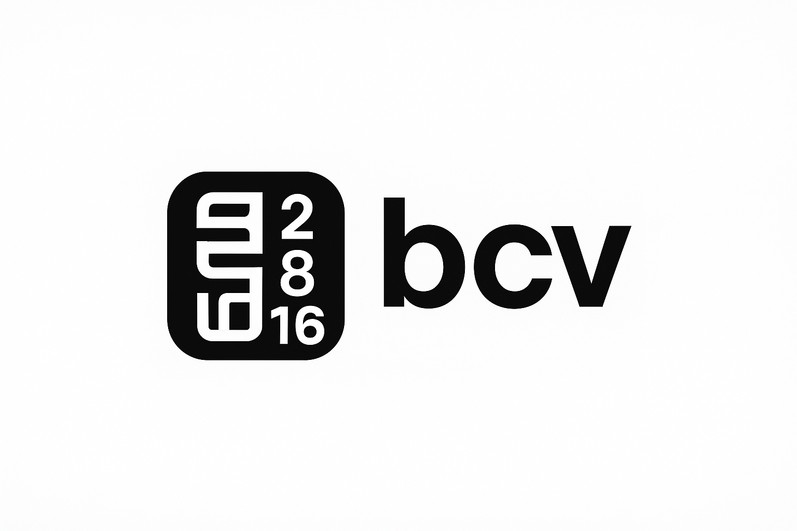

BaseConVerter (bcv) — Convertisseur de bases numériques
{kind=link}
Un outil éducatif et pratique pour comprendre la numérisation
bcv (BaseConverter) est un utilitaire léger en ligne de commande conçu pour convertir des nombres entre différentes bases numériques : binaire (2), octale (8), décimale (10) et hexadécimale (16).
Il s’agit d’un projet libre développé par KerHack-Libre dans un but éducatif : aider les développeurs, étudiants et passionnés à acquérir une base solide sur le système de numérisation informatique, tout en proposant un outil réellement utile pour le debuggage et l’inspection de données binaires. Et participer activement à la construction d’un socle de compétences numériques durable et accessible à tous.
Philosophie et Objectifs du Projet
Le projet bcv est né d’un besoin simple : comprendre et manipuler les nombres à la base du calcul informatique.
Au-delà de sa simplicité apparente, cet outil met en avant trois valeurs essentielles :
Éducation — servir de support à l’apprentissage des systèmes de numération.
Simplicité — un binaire léger, portable et rapide.
Utilité quotidienne — un compagnon pratique pour tout développeur système.
> « Une chose aussi basique qu’une conversion de base peut, à sa manière, aider à mieux comprendre comment pense la machine. »
Un clin d’œil au New-Deal Technologique du Sénégal
{kind=link}
Le projet bcv s’inscrit pleinement dans la vision du New-Deal Technologique du Sénégal, une initiative nationale visant à transformer la jeunesse en acteurs du numérique, à promouvoir la souveraineté technologique et à encourager la création d’outils locaux et libres.
Dans cette optique, bcv se veut plus qu’un simple utilitaire :
Il offre une expérience d’apprentissage concrète sur la base du calcul informatique.
Il contribue à renforcer les compétences fondamentales en informatique et logique numérique.
Il incarne la philosophie du “faire local, comprendre global”, essentielle à l’indépendance technologique.
Il démontre que des outils simples, conçus localement, peuvent avoir une valeur pédagogique mondiale.
Le New-Deal Technologique n’est pas qu’un programme : c’est un état d’esprit. Et bcv en est un humble reflet libre, éducatif, et profondément ancré dans l’innovation locale. Mais surtout contribuer à forger une génération dotée d’une base solide de compétences, essentielle à l’ère numérique.
Installation et Compilation
Prérequis : - Un compilateur C (GCC) - Un environnement POSIX (Linux / BSD / macOS)
Compilation avec Meson :
Exécution :
$ ./bcv -x 255
0xFF
Modes d’utilisation
Mode Ligne de Commande :
bcv [OPTION] <NUMBER>
- Options disponibles :
-boub/<nombre>→ conversion en base 2-oouo/<nombre>→ conversion en base 8-xoux/<nombre>→ conversion en base 16-vouvou!→ affiche la version-houhou?→ affiche l’aide intégrée
Mode interactif : Lancer sans argument :
$ ./bcv
Puis entrer des commandes comme :
b/42 → convertit en binaire
o/42 → convertit en octal
x/42 → convertit en hexadécimal
exit → quitte la session
Exemples d’usage
Conversion simple :
$ bcv 12
DEC : 12
HEX : 0xC
OCT : 0o14
BIN : 0b1100
Détection automatique de base :
$ bcv 0xFEED
DEC : 65261
OCT : 0o177355
BIN : 0b1111111011101101
$ bcv 0b010011
DEC : 19
HEX : 0x13
OCT : 0o23
Version et Licence
Version : 1.1.4
Auteur : Umar Ba (<jUmarB@protonmail.com>)
Organisation : KerHack-Libre
Licence : Libre et gratuite.**.— AUCUNE GARANTIE
Vous pouvez contribuer ou suivre l’avancement du projet ici : <https://github.com/KerHack-Libre/baseconv>
Ce outil a pour but de promouvoir l’apprentissage numérique, l’outillage local et la souveraineté technologique.Et aider à bâtir, ici même, une base solide de compétences pour affronter l’ère numérique.